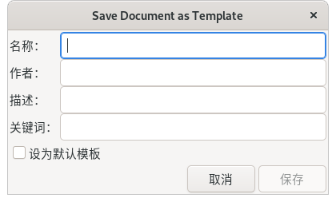

文件→保存为模板
无快捷键。

图1：文件→保存为模板
此命令可以把当前文件保存为自定义模板。
保存为模板后，点击菜单 文件→从模板新建，在左侧的模板列表中就可以找到这个新建的自定义模板，其名称就是上面图1中的 名称 栏中输入的内容。
如果您经常需要使用某一种或几种特定规格的文件，那么可以用此命令把文件保存为模板，方便以后使用。
如果勾选了 设为默认模板，那么以后再点击菜单 文件→新建 时，都会根据此模板来创建新文件。这种情况下，模板中的所有内容都会自动出现在新创建的文件中。
如果您使用的是Linux系统，那么这个新建的模板文件通常会保存到 /home/perer/.config/inkscape/templates/ 文件夹中。此文件夹可以自行设置，方法请参考菜单 编辑→首选项。
如果从这个文件夹中删除新建的模板文件，那么菜单 文件→从模板新建 打开的对话框中，左侧的模板列表将不会再显示此模板。
如果从这个文件夹中删除default.svg文件，那么inkscape菜单 文件→新建 会恢复为默认设置，不再使用自定义的模板。
模板不仅保存绘图内容，也保存文件规格信息，例如单位。默认创建的新文档，单位是毫米(mm)。如果想创建单位是像素(px)的文档，在对话框左侧的模板列表中选择 default px，然后点击右下角的 从模板新建 按钮即可。